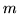
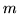
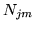

Model adaptation can also be accomplished using a maximum a posteriori (MAP) approach . This adaptation process is sometimes referred to as Bayesian adaptation. MAP adaptation involves the use of prior knowledge about the model parameter distribution. Hence, if we know what the parameters of the model are likely to be (before observing any adaptation data) using the prior knowledge, we might well be able to make good use of the limited adaptation data, to obtain a decent MAP estimate. This type of prior is often termed an informative prior. Note that if the prior distribution indicates no preference as to what the model parameters are likely to be (a non-informative prior), then the MAP estimate obtained will be identical to that obtained using a maximum likelihood approach.
For MAP adaptation purposes, the informative priors that are generally
used are the speaker independent model parameters. For mathematical
tractability conjugate priors are used, which results in a simple
adaptation formula. The update formula for a
single stream system for state  and mixture component  is
and mixture component  is
where is a weighting of the a priori knowledge to the
adaptation speech data and  is the occupation likelihood of the
adaptation data, defined as,
is the occupation likelihood of the
adaptation data, defined as,
where is the speaker independent mean and is the mean of the observed adaptation data and is defined as,
As can be seen, if the occupation likelihood of a Gaussian component () is small, then the mean MAP estimate will remain close to the speaker independent component mean. With MAP adaptation, every single mean component in the system is updated with a MAP estimate, based on the prior mean, the weighting and the adaptation data. Hence, MAP adaptation requires a new ``speaker-dependent'' model set to be saved.
One obvious drawback to MAP adaptation is that it requires more adaptation data to be effective when compared to MLLR, because MAP adaptation is specifically defined at the component level. When larger amounts of adaptation training data become available, MAP begins to perform better than MLLR, due to this detailed update of each component (rather than the pooled Gaussian transformation approach of MLLR). In fact the two adaptation processes can be combined to improve performance still further, by using the MLLR transformed means as the priors for MAP adaptation (by replacing in equation 9.7 with the transformed mean of equation 9.1). In this case components that have a low occupation likelihood in the adaptation data, (and hence would not change much using MAP alone) have been adapted using a regression class transform in MLLR. An example usage is shown in the following section.